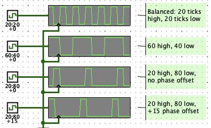

Found in Wiring Library
Clocks are for synchronizing state changes in a circuit: a clock outputs an alternating sequence of high (1) and low (0) values, and other components like registers and flip flops perform actions when triggered by these clock signals.
Manual ticks: Toggle a clock's value by clicking it with the Poke Tool. All clocks within a circuit are internally tied together, so poking any clock will advance all clocks in unison. You can also tick forward using the Simulate menu or keyboard shortcuts: a "half cycle" tick will make all clocks go from low to high, or vice versa; A "full cycle" tick will do a pair of half cycles in quick succession, so clocks will go through a full cycle, e.g. from high, to low, and back to high again.
Auto-ticks: Enabing auto-ticks using the Simulate menu, or keyboard shortcut, causes the simulator to generate ticks on a regular schedule, advancing all clocks at an even tempo. Using the Simulate menu or keyboard shortcuts, you can speed up or slow down the tick rate tempo: selecting 32Hz, for example, makes the simulator aim for 32 full cycle ticks (64 half cycle ticks) every second.
Multiple Clocks: All clocks in a simulation -- all the clocks in a circuit, and all clocks within any embedded subcircuits -- are tied to the same underlying tick source, so they all tick in unison.
Note: At high tick rates, the simulator on-screen visualization and animations may not keep up with the underlying circuit simulation. Visual glitches may be present: for example, a network of wires connected to a clock may blink at what appears to be an uneven pace, or a signal with rapidly changing values may seem to stay mostly constant. These are not glitches with the underlying circuit simulation itself, only with the visualization, much like the strobe effect or rolling-shutter effect in photographs and videos. Logisim is designed to prioritize simulation at the highest possible rate, even if the on-screen graphics can't keep up. Many circuits can be simulated at 8MHz or faster, but animations above 30-60 frames per second likely wouldn't be visible to the human eye anyway.
Also note: Depending on the complexity of the circuit, the simulator may not be able run as fast as you want. In other words, the auto tick frequency is a target, but can't be guaranteed. Logisim can display the actual tick rate achieved in the upper right corner (see Logisim Settings).

Non-standard duty cycles and phase offsets can be configured in the properties panel for each clock. By default, clocks use a 1:1 duty cycle meaning they output a high value for 1 tick, then a low value for 1 tick. The full cycle takes 2 ticks. An n:m duty cycle means a clock will output a high value for the first n ticks, then output a low value for the next m ticks, before starting over again, taking n+m ticks to complete a full cycle.The phase offset controls the alignment of each clock's duty cycle relative to other clocks. By default, clocks have a phase offset of 0. Configuring a clock to use a 1 tick phase offset, the timing is advanced so the clock is effectively 1 tick ahead of others. Generally, a phase offset of k ticks means the clock is k ticks ahead of other clocks. For example, a clock with 4:1 duty complete its cycle in 5 ticks, normally outputting high values for the first 4 ticks, then transition to a low value for the last tick in the cycle, then begin again by transitioning to high. But setting the phase offset to 1 tick means all the transitions arrive 1 tick earlier, but otherwise have the exact same spacing and pace. If the circuit has only one clock, or if all clocks have the same phase offset, you won't notice any difference by changing the phase offset. But putting two clocks side by side that are identical except for different phase offsets will reveal how they are "offset" in time from each other.
A clock has only one port, an output with a bit width of 1, carrying the current value of the clock.
When using Edit Tool:
Clicking any clock within a circuit will cause the simulator to tick once, advancing all clocks forward in unison.
Supports VHDL and Verilog synthesis. To dynamically control the speed clocks tick within an fpga, use the Dynamic Clock Control component.